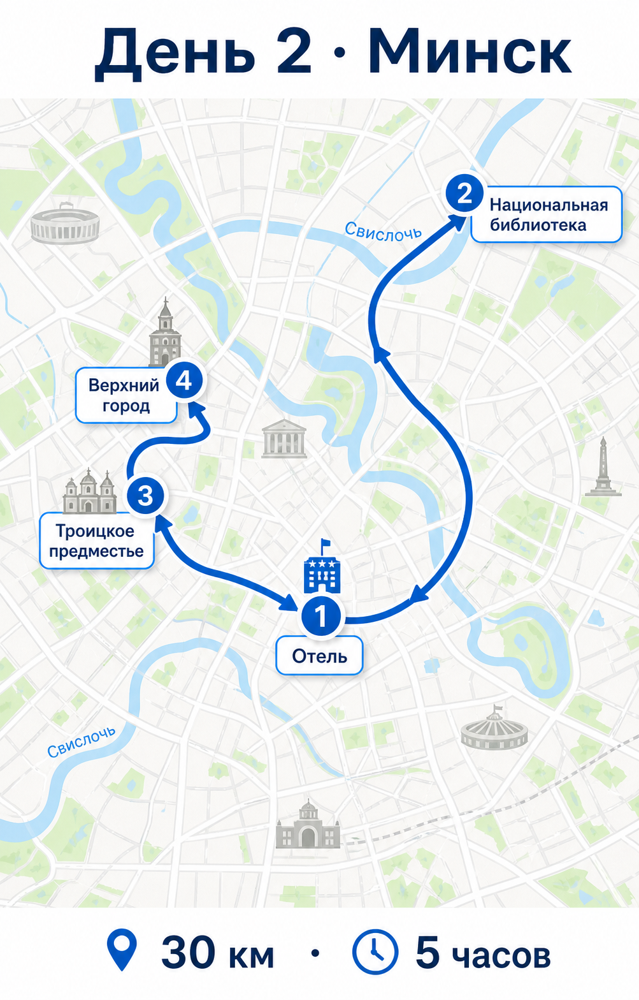

Дима, Надя и Тимур — маршрут по дням с фото и навигацией
Фотографии достопримечательностей и гастромест разнесены по дням, чтобы во время движения по маршруту было проще быстро сориентироваться. Яндекс-ссылки возвращены для каждого ключевого дня.
Маршрут по дням
- Гастростоп: «Аколица» у Вязьмы; Тимуру — мясо/драники, Наде — десерт и кофе.
- Ориентир по еде: завтрак 2 400 ₽, перекус 1 200 ₽, обед 3 300 ₽, ужин в Минске 4 200–9 500 ₽.


- Ритм дня: завтрак в Mon Nom, затем Национальная библиотека, площадь Независимости, Троицкое предместье и Остров слёз без лишних переездов.
- Еда: завтрак 2 400–3 300 ₽, обед 3 300 ₽, ужин 4 200–6 000 ₽; на день не нужны входные билеты, кроме обзорной площадки библиотеки.


- Главный акцент: лучшие семейные фото всей поездки лучше делать именно здесь.
- Еда: обед 3 300 ₽ по дороге/в Мире, ужин 4 200–5 000 ₽ в Несвиже.


- После крепости: лучше сделать спокойный обед и только потом ехать в пущу.
- Еда: обед 3 300–5 200 ₽, ужин 4 200–6 000 ₽.


- Сценарий еды: облегчённый завтрак/бранч, обед в Смоленске, короткий кофе-стоп при необходимости.
- Главное: не перегружать день дополнительными прогулками.

Справочно по достопримечательностям
В этих блоках собраны короткие, точные и понятные исторические саммари в формате современного путеводителя. Из каждого дня можно перейти сюда, прочитать справку и быстро вернуться назад к нужному блоку маршрута.
Троицкое предместье — один из самых узнаваемых исторических кварталов Минска на берегу Свислочи; в ранние века это была важная торговая зона, где сходились дороги из Вильно, Полоцка, Смоленска и Могилёва. После получения Минском Магдебургского права в 1499 году городской центр стал смещаться, но район сохранил историческую память о старом торговом Минске, а современная городская ратуша была открыта в 2003 году как часть обновлённого исторического образа центра. [web:161]
Для поездки это место удобно тем, что даёт не «музей под стеклом», а живой городской контекст: вода, силуэты старых домов, ратуша, прогулочные оси и мягкий вечерний свет. Именно поэтому Троицкое предместье хорошо работает как первая неспешная прогулка после длинного перегона и как понятная визуальная точка знакомства с Минском. [web:161]
Национальная библиотека Беларуси находится на проспекте Независимости, 116 и хорошо встраивается в городской маршрут вместе с площадью Независимости и центральной прогулочной частью города. [web:238][web:245]
В современном туристическом ритме это удобная точка для панорамы Минска, после которой логично ехать или гулять дальше в сторону центра, Троицкого предместья и Острова слёз. [web:242][web:245][web:248]
Мирский замок — один из главных символов исторической Беларуси и редкий для региона пример замка, в облике которого читаются сразу несколько эпох. Его строительство относят к концу XV — началу XVI века; замок связывают с Юрием Ильиничем, а в список Всемирного наследия ЮНЕСКО он был включён в 2000 году. [web:156][web:166][web:167][web:169][web:170]
Его ценность не только в «красивой картинке»: ЮНЕСКО выделяет Мир как наглядное свидетельство последовательной смены готики, ренессанса и барокко, а также как памятник долгой и непростой политической истории региона. Для путешественника это делает Мир идеальным местом, где визуальная красота совпадает с исторической глубиной, поэтому он так хорошо работает в формате семейного фото-дня. [web:166][web:169]
Несвиж — это уже не просто отдельный замок, а большая резиденциальная и культурная система, связанная с родом Радзивиллов. Архитектурный, жилой и культурный комплекс рода Радзивиллов в Несвиже был включён в список Всемирного наследия ЮНЕСКО в 2005 году; в него входят дворец, ландшафтные парки и костёл Божьего Тела. [web:157][web:160][web:162][web:165]
Если Мир воспринимается как «замок-картинка», то Несвиж — это уже пространство европейской резиденциальной культуры: здесь важны не только фасады, но и идея статуса, власти, приватного двора и продуманного ландшафта. Именно поэтому в современном путеводительном смысле Несвиж интересен не меньше, а часто и глубже Мира — он показывает, как в центре Беларуси формировалась аристократическая культурная среда. [web:157][web:165]
Брестская крепость — одно из самых сильных мемориальных мест на всём маршруте. Музей героической обороны Брестской крепости был открыт 8 ноября 1956 года, а мемориальный комплекс «Брестская крепость-герой» — 25 сентября 1971 года; именно эта связка музея и мемориального пространства формирует сегодняшнее восприятие крепости. [web:175][web:186]
Современный путеводитель советует воспринимать крепость не только как символ первых дней войны, но и как сложный многослойный исторический ландшафт: фортификация, музей, ритуальное пространство памяти и большой городской ориентир. Поэтому здесь лучше не спешить и идти от внешнего впечатления масштаба к музейному контексту, а уже потом — к обеду и переезду в пущу. [web:181][web:182][web:186]
Беловежская пуща — один из самых известных лесных массивов Европы и объект Всемирного наследия ЮНЕСКО. Как государственный заповедник на белорусской стороне она ведёт историю с 25 декабря 1939 года, а в 1992 году наиболее сохранившийся участок старовозрастных лесов был внесён в список Всемирного наследия ЮНЕСКО; в 2014 году трансграничный белорусско-польский объект был повторно включён в список по новым критериям выдающейся универсальной ценности. [web:176][web:179][web:180]
Но по-настоящему интересно здесь то, что пуща — это одновременно древний лес, бывшая территория царских и княжеских охот и современный национальный парк. В практическом смысле это означает, что поездка в пущу — не просто прогулка «по природе», а встреча с очень редким европейским ландшафтом, где тема охраны, истории власти и живой экосистемы соединены в одном месте. [web:176][web:180]
Сводная экономика
| День | Км | Топливо | Cost per km | Еда | Отель | Base итого |
|---|---|---|---|---|---|---|
| 1 | 720 | 6 912 | 2 880 | 10 900 | 7 500 | 28 192 |
| 2 | 120 | 1 152 | 480 | 9 900 | 7 500 | 19 032 |
| 3 | 130 | 1 248 | 520 | 9 900 | 7 000 | 18 668 |
| 4 | 320 | 3 072 | 1 280 | 9 900 | 7 500 | 21 752 |
| 5 | 1070 | 10 272 | 4 280 | 7 500 | — | 22 052 |
| Итого | 2 360 | 22 656 | 9 440 | 48 100 | 29 500 | 109 696 |
Base total: 109 696 при пробеге 2 360 км. Cost per km рассчитан из ставки 4/км для всего пробега и включает исторические затраты на «замену масла» и «ремонт подвески» в каждом цикле ТО 10 000 км.
Экскурсии
| Место | Контакт | Время | Формат | Источник |
|---|---|---|---|---|
| Мирский замок экскурсии |
сайт/заказ | 10:00–19:00 | музейные туры; аудиогид | официальный сайт |
| Несвижский замок отдел экскурсий |
20-602; 20-660; +375 29 551-80-51 | 9:30–18:30 | дворец; парк; центр | официальный сайт |
Справочник контактов
| Место | Контакт | Время работы | Вход / бронь | Яндекс Карты |
|---|---|---|---|---|
| Отель «Минск» отель | +375 (17) 209-90-61; +375 (17) 209-90-62 | 24/7 | - | точка |
| Гостиница «Несвиж» отель | +375 (29) 631-17-77; +375 (29) 539-60-00 | 24/7 | - | точка |
| Национальная библиотека, обзорная площадка библиотека | сайт/билеты | ежедневно 11:00–23:00 | последний подъём 22:30 | точка |
| Мирский замок замок | +375 (1596) 3-62-90 | 10:00–19:00 | касса до 18:20 | точка |
| Несвижский замок замок | +375 (1770) 5-97-49 | 9:30–18:30; дворец 10:00–19:00 | билеты до 17:30–18:00 | точка |
| Мирский замок — экскурсии замок | сайт/заказ | 10:00–19:00 | по заявке; аудиогид и музейные туры | точка |
| Несвиж — отдел экскурсий замок | 20-602; 20-660; +375 29 551-80-51 | 9:30–18:30 | бронь экскурсий; дворец, парк, центр | сайт |
| Музей обороны Брестской крепости музей | +375 (162) 25-42-74; +375 (162) 53-44-21 | 9:00–18:00, пн выходной | касса до 17:30 | точка |
| Charlie, Минск еда | +375 29 175 17 51 | пн-пт 12:00–23:00; сб-вс 11:00–23:00 | бронь по телефону | точка |
| Mon Nom, Минск еда | карточка в Яндекс Картах | 10:00–22:00 | последний заказ 21:15 | точка |
| Кухмистр, Минск еда | +375 29 119 49 00 | - | желательна бронь | точка |
| Литвины, Минск еда | +375 29 119 34 34 | - | желательна бронь | точка |
| Васильки, Минск еда | +375 29 706 44 52 | - | - | точка |
| Бульбашы, Минск еда | +375 29 140 23 40 | 12:00–23:00 | желательна бронь | точка |
| San Jacques, Смоленск еда | +7 (4812) 24-24-44 | 12:00–00:00 | бронь по телефону | точка |
| aeblehaven, Смоленск еда | +7 950 708-52-37 | пн-ср 07:50–22:00; чт-пт 07:50–23:00; сб 08:50–23:00; вс 08:50–22:00 | бронь по телефону | точка |
Для музеев и отелей внесены устойчивые справочные данные. Для кафе и ресторанов оставлены прямые точки в Яндекс Картах, потому что телефоны и часы у заведений меняются чаще; с телефона это самый надёжный способ быстро построить маршрут и проверить актуальную бронь.